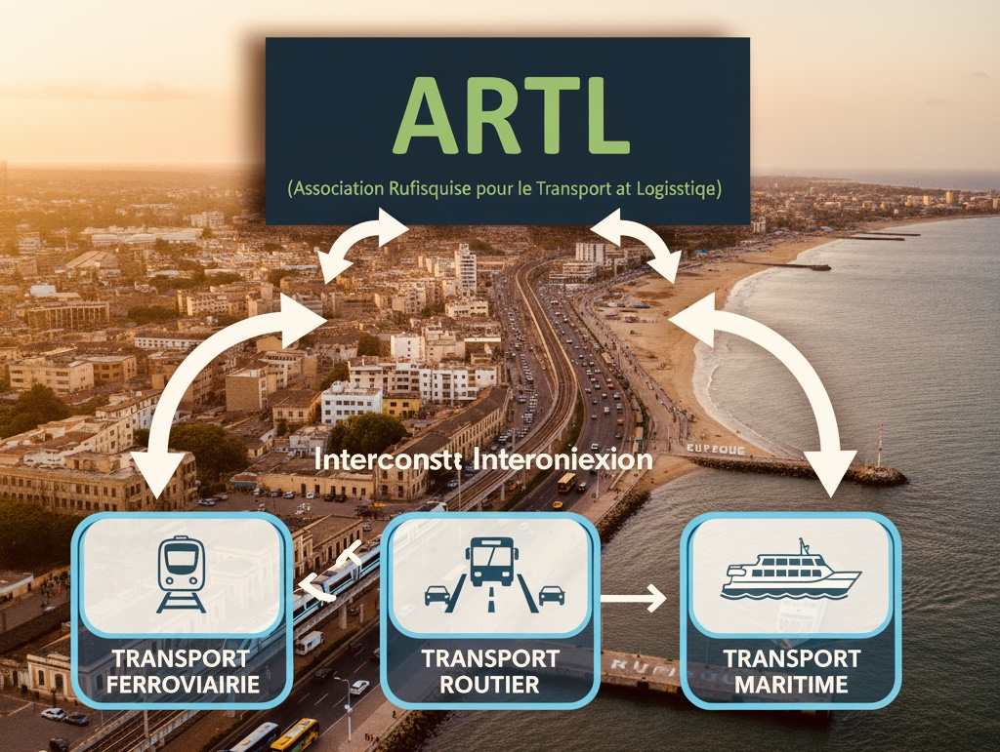
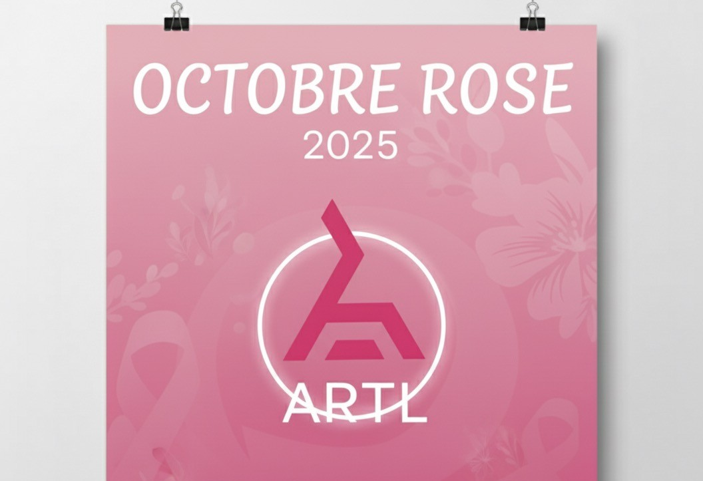

Lancement officiel du projet de Transport multimodale à Rufisque
Notre association s'engage dans un projet innovant de transport multimodal à Rufisque, visant à améliorer la mobilité urbaine en combinant plusieurs modes de transport durables : transport routier, transport ferroviaire, et transport maritime.
L’objectif est de réduire les embouteillages, faciliter les déplacements quotidiens des habitants, et promouvoir des solutions de transport écologiques et accessibles.
Ce projet s’inscrit dans une démarche de développement urbain intelligent, inclusif et respectueux de l’environnement.

2ème Édition de la Journée d’Octobre Rose
Unis pour la prévention et la sensibilisation au cancer du sein.
L’ARTL est fière d’organiser la 2ème édition de la Journée d’Octobre Rose, un événement engagé en faveur de la lutte contre le cancer du sein.
📅 Date : bientôt (Suivez-nous sur nos réseaux sociaux pour plus d'information)
📍 Lieu : à Rufisque
⏰ Heure : à 9H00
💡 Pourquoi cette journée ?
Chaque année, Octobre Rose est l’occasion de rappeler l’importance du dépistage précoce et du soutien aux femmes touchées par le cancer du sein.
En tant qu'association citoyenne, ARTL s’engage à informer, sensibiliser et rassembler autour de cette cause vitale.
🌸 Au programme :
• 📚 Stands de sensibilisation et d'information sur la santé du sein
• 💬 Rencontres et témoignages de femmes inspirantes
• 🎙️ Conférences animées par des professionnels de santé
• 🧘 Ateliers bien-être (relaxation, soins naturels…)
• 🎨 Activités créatives et participatives
• 🚶♀️ Marche solidaire en rose pour clôturer la journée
💖 Rejoignez-nous !
Venez participer à cette journée placée sous le signe de l’espoir, de la solidarité et de la prévention.
Ensemble, montrons notre soutien aux femmes touchées par la maladie et faisons reculer le cancer du sein.
➡️ Dress code : Une touche de rose
➡️ Entrée libre et ouverte à tous
📢 Suivez-nous sur nos réseaux sociaux pour découvrir le programme détaillé !
#OctobreRose #ARTL #Sensibilisation #CancerDuSein #Solidarité #Prévention